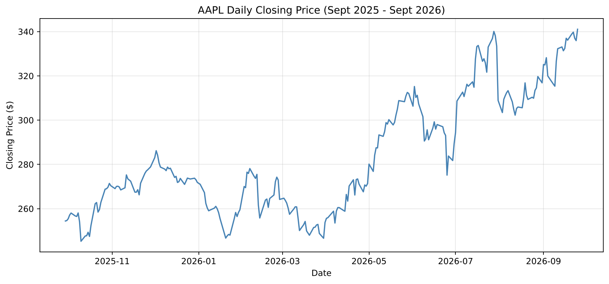
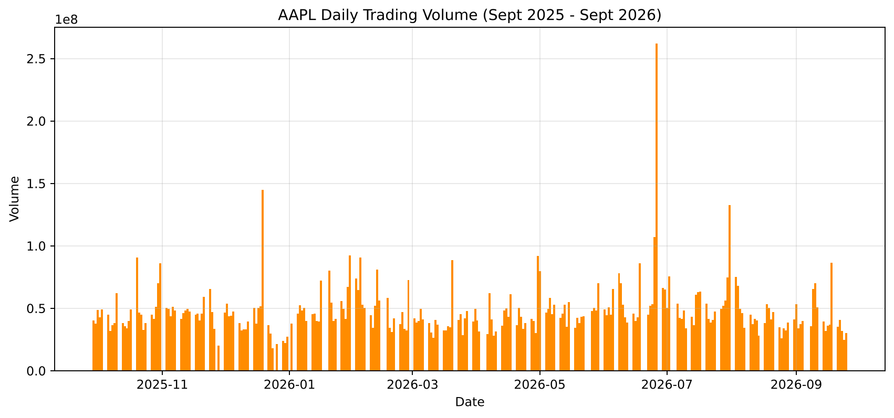
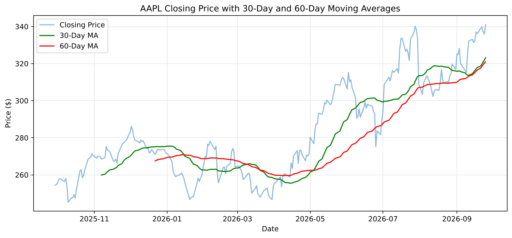
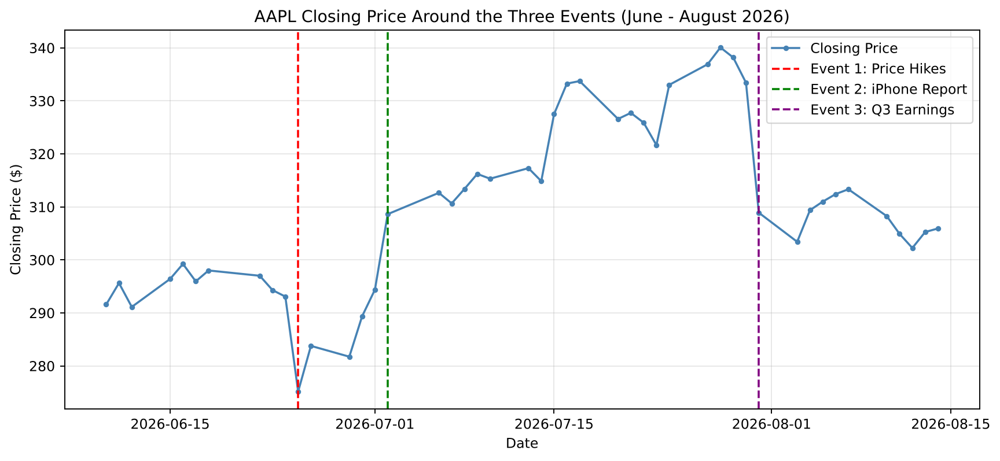
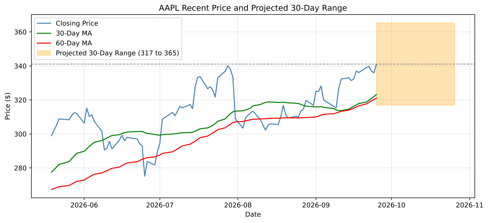

Data Analysis · Finance
The notebook renders directly on GitHub with every chart and table. It loads the data straight from the repository, so it also runs as-is in Google Colab ↗.
How did Apple's stock actually behave over a year of trading, which pieces of news moved it, and what price range is reasonable to expect over the next 30 days?
Descriptive statistics and time-series charts for the full year; 30- and 60-day moving averages to separate trend from noise; a before-and-after window around the three biggest news-driven moves; and a volatility-based price range, tested against how the stock actually moved over every 21-day stretch in the data.
AAPL rose about 34% over the period and finished at its highest close of the year. Its largest swings came around company-specific news in June and July 2026, and the projected range for the next 30 days runs from about $317 to $365.
One year of daily trading data for Apple Inc. from Yahoo Finance — September 29, 2025 to September 25, 2026, 250 trading days in all.
The date plus that day's Open, High, Low, Close, Adjusted Close, and Volume. The analysis runs on the daily closing price and trading volume, with daily returns calculated from the close.
I used the Close column rather than Adjusted Close, because the goal was to describe the price investors actually saw each day. The notebook loads the CSV straight from GitHub, so anyone can rerun it and get the same results.
Both columns skew right. The mean close sits about $9.50 above the median, so the stock spent more of the year at lower prices, with fewer high-priced days pulling the average up. Volume shows the same pattern, driven by a handful of unusually busy days.
| Statistic | Closing Price | Daily Volume |
|---|---|---|
| Count | 250 | 250 |
| Mean | $283.42 | 48.3M |
| Median | $273.96 | 44.6M |
| Std. Deviation | $26.27 | 21.5M |
| Minimum | $245.27 | 17.9M |
| Maximum | $341.07 | 261.8M |
Summary statistics, September 2025 – September 2026. Volume in millions of shares.
AAPL ended the period up 34% at its highest close of the year, but it got there through a quiet late 2025, a choppy early 2026, and a turbulent summer.
The stock opened the period at $254.43 on September 29, 2025 and closed at $341.07 on September 25, 2026. Grouping daily returns by month separated the calm stretches from the rough ones.
November and December 2025 were the calmest, with daily-return standard deviations of 0.96% and 0.75%. February, June, and July 2026 were the roughest at 2.20%, 2.20%, and 2.45%, roughly 1.4 to 1.6 times the full-year figure of 1.55%. May went the other way: the price climbed from $276.83 to $312.51 while volatility held at 1.10%, a steady climb rather than a jumpy one.

Volume averaged 48.3 million shares a day. The busiest day, June 26, 2026, saw 261.8 million, more than five times that. It lined up with the annual Russell index reconstitution, so much of that volume likely came from index funds rebalancing rather than a reaction to Apple news.
December 19, 2025 ranked second at 144.6 million shares, yet the price moved only 0.54%. It was a "triple witching" day, when stock options, index options, and index futures all expire together. Compare July 31, 2026: 132.5 million shares and a 7.35% drop, the day after Apple's earnings. Some spikes trace back to company news. Others are routine market mechanics.

The 30-day and 60-day moving averages filter out the daily noise. The 30-day average dropped below the 60-day on January 16, 2026, crossed back above on March 10, then dropped below again just ten days later on March 20. That back-and-forth marks a choppy, directionless stretch that's hard to see in the raw price line.
On May 4, 2026 the 30-day average crossed back above and stayed there for the rest of the period. That crossover marks the start of the sustained uptrend behind the year's 34% gain.

I picked three events straight from the largest moves in the data, then compared the five trading days before each one with the five after. The event day sits on its own row, so it doesn't get mixed into either average.

Method
For each event: the close and volume on the day itself, the average close and volume across the five trading days on either side, and where the stock stood five trading days later compared with the close just before the news.
| Measure | Event 1 Price Hikes · Jun 25 | Event 2 iPhone Report · Jul 2 | Event 3 Q3 Earnings · Jul 31 |
|---|---|---|---|
| Prior close | $293.08 | $294.38 | $333.43 |
| Event day close | $275.15 | $308.63 | $308.91 |
| Event day change | −6.12% | +4.84% | −7.35% |
| Event day volume | 107.0M | 75.4M | 132.5M |
| Avg close, 5 days before | $295.67 | $284.88 | $336.33 |
| Avg close, 5 days after | $291.58 | $313.65 | $309.91 |
| Change in avg close | −1.38% | +10.10% | −7.85% |
| Avg volume, 5 days before | 55.7M | 110.1M | 56.0M |
| Avg volume, 5 days after | 103.8M | 43.9M | 54.6M |
| Close 5 days later vs. prior close | +5.31% | +7.11% | −6.03% |
#Event dates (the first trading day each piece of news could affect)
events = {'Event 1: Price Hikes': '2026-06-25',
'Event 2: iPhone Report': '2026-07-02',
'Event 3: Q3 Earnings': '2026-07-31'}
rows = []
for name, date in events.items():
i = df.index[df['Date'] == date][0] #row number of the event day
before = df.iloc[i-5:i] #5 trading days before the event
after = df.iloc[i+1:i+6] #5 trading days after the event
rows.append({
'Event': name,
'Event Day Change (%)': df['Daily_Return'][i],
'Avg Close 5 Days Before ($)': before['Close'].mean(),
'Avg Close 5 Days After ($)': after['Close'].mean(),
'Change in Avg Close (%)': (after['Close'].mean() / before['Close'].mean() - 1) * 100,
'Close 5 Days Later vs Prior Close (%)': (df['Close'][i+5] / df['Close'][i-1] - 1) * 100
#...plus the close and volume columns, in the full notebook
})Event 01 · June 25, 2026
Apple raised prices on its MacBooks, iPads, and some home devices to offset rising memory chip costs.
The stock fell 6.12% on 107.0 million shares, nearly double the 55.7 million a day in the week before. However, the drop didn't last. The average close slipped only 1.38% the following week, and five trading days later the stock sat 5.31% above its pre-event close. Volume stayed high afterward, but mostly because of the June 26 Russell rebalance.
A strong one-day reaction, with no lasting change in price.
Event 02 · July 2, 2026
Late on July 1, Nikkei Asia reported that Apple planned at least five new iPhone models through early 2027 and had raised its production target for its first foldable iPhone to about 10 million units.
July 2 brought the largest one-day gain of the year, +4.84%, on 75.4 million shares. The gain held: the average close rose 10.10% week over week, and the stock stood 7.11% above its pre-event close five days later.
The comparison has a weak spot. The "before" week includes the June 25 drop and the June 26 rebalance, which pull the average price down and the average volume up, so part of this gain is likely a rebound from the selloff. The data can't separate the two.
Event 03 · July 31, 2026
Apple reported after the close on July 30. Revenue grew 16% to $109.42 billion and beat expectations, but the company gave a weak forecast for the next quarter and warned that supply constraints would increase significantly.
July 31 was the largest one-day loss of the year, −7.35%, on 132.5 million shares. Unlike June 25, this drop stuck. The average close fell 7.85% the following week, and five trading days later the stock was still 6.03% below its pre-event close.
The strongest link of the three: the drop came right after the report, arrived on heavy volume, and held for a full week without overlapping another event. Even so, the numbers show when and how much the stock moved, not why. The weak forecast is the most reasonable explanation, not a proven cause.
I estimate AAPL will trade between about $317 and $365 over the next 30 days, centered on the last close of $341.07, which was also the highest close of the year.
Projection
Thirty calendar days is about 21 trading days. Scaling the full-year daily volatility by the square root of 21 gives the expected one-standard-deviation move, and the range sits evenly on either side of the last close.

#30 calendar days is 21 trading days once weekends are removed
trading_days = 21
#Scale daily volatility up to a 21-day move using the square root of time
vol_21 = daily_returns.std() * (trading_days ** 0.5)
lower_bound = last_price * (1 - vol_21)
upper_bound = last_price * (1 + vol_21)
#Expected 21-day move: 7.09% -> range $316.87 to $365.27
#How much did the stock actually move over every 21-trading-day stretch this year?
move_21 = df['Close'].shift(-21) / df['Close'] - 1
#How many past stretches would have landed inside the range?
inside = ((move_21 >= -vol_21) & (move_21 <= vol_21)).sum()
#147 of 229 stretches (64.2%)Daily returns had a standard deviation of 1.55% over the full year, a middle ground between the 1.78% of the last 60 days, which include both July shocks, and the 1.30% of the calmer last 30. Scaled to 21 trading days, that's a 7.09% move either way: $316.87 to $365.27.
Of the 229 stretches of 21 trading days in the sample, 64.2% would have landed inside the range, close to the roughly 68% a one-standard-deviation range should capture. The misses leaned up: 66 finished above the range and only 16 below, so the range may play it safe on the upside.
The stock sits well above its 30-day average of $323.17 and 60-day average of $321.02, and both are still rising. The $317 floor sits just below both, so reaching it means falling back through them. That happened after July 31, so it's a real possibility rather than an extreme case.
The range assumes the next 30 days look statistically like the past year, with volatility near 1.55% a day. It assumes no built-in drift up or down, which is why it sits evenly around the current price even though the typical 21-day move was +2.57%. And the square-root-of-time method assumes daily returns follow a roughly normal, bell-shaped pattern.
Historical data can support a reasonable business judgment, but it can't replace an understanding of the news and risks that move a stock.
The price data, plus the news coverage used to identify each event and explain the unusual trading days.
Daily price and volume data behind every chart and table.
Event 1: the Mac and iPad price increases.
Event 2: the original report on the new iPhone lineup.
Event 2: coverage of the Nikkei report and the foldable iPhone production target.
Event 3: fiscal Q3 2026 results and guidance.
Context for the record volume on June 26, 2026.
Context for the heavy but low-impact volume on December 19, 2025.